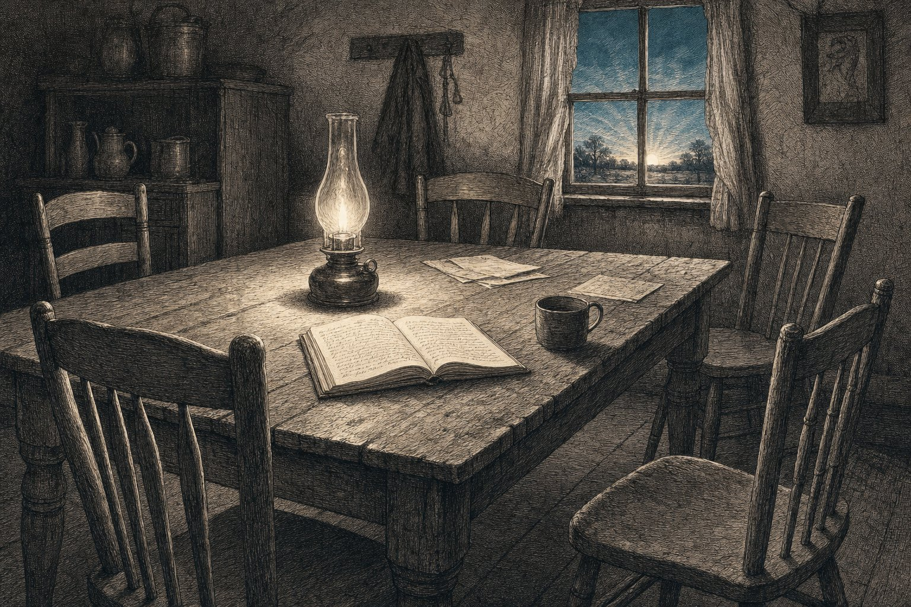

Ciò che lascio
Su VMB-ESG, l'eredità di Nova Democratia, e il dubbio che non voglio ragionare via
Jacobus van Merksteijn · Scienziato dei materiali e inventore

Occasione
Un paio di anni fa ho scritto Nova Democratia. Era un tentativo di formulare qualcosa che mi mancava in ogni livello di governo in Europa: un sistema che sia democratico senza essere paralizzato, che ascolti senza impantanarsi nell'ascolto, che decida senza imporre. Ci credevo. Credo ancora nella sua intenzione.
Ma, sinceramente, ho iniziato a dubitare della sua attuazione. Nova Democratia, man mano che lo sviluppavo, diventava un gigantesco progetto di strutture riunionali. Consigli, livelli, momenti di consultazione, retroazioni. Cercava di risolvere la paralisi aggiungendo più consultazione, ed è esattamente ciò che causa la paralisi. L'ho riconosciuto solo quando l'ho scritto e l'ho riletto. La medicina era la stessa ricetta della malattia, solo vestita diversamente.
Da allora lavoro su qualcosa che ho iniziato a chiamare VMB-ESG. Non è una variazione di Nova Democratia. È, in un certo senso, il suo opposto. Dove Nova Democratia partiva da più democrazia = più consultazione, VMB-ESG parte da più democrazia = titolarità più rapida con responsabilità visibile a posteriori.
Questo testo è il mio tentativo di spiegare cosa sto costruendo, perché penso che sia diverso da ciò che esiste ora, e perché dubito che ce la faremo — pur continuando comunque. Non è un pamphlet. Non è un invito a firmare qualcosa. È un tentativo di formulare un pensiero nel modo più chiaro possibile, affinché qualcun altro, da qualche parte, un giorno, possa riprenderlo e attuarlo davvero.
Cosa ho fatto diversamente
La differenza tra Nova Democratia e VMB-ESG sta in un'osservazione che conoscevo già dall'azienda di famiglia dei miei genitori, ma che ho compreso solo più tardi.
Circa il 98% di ciò che mio padre e mia madre decidevano, lo decidevano da soli. Mio padre nel suo dominio, mia madre nel suo. Nessuna riunione. Nessuna consultazione. Nessuna firma dell'altro. Decisione individuale, diretta, conclusa.
Il difficile 2% andava al tavolo di cucina. Lì si sedeva tutti — noi figli, a volte il personale, a volte un vicino di cui ci fidavamo. Chiunque poteva contribuire. Chiunque poteva proporre modifiche. Ma alla fine decideva mio padre, dopo aver ascoltato.
Ciò che allora non vedevo, e ora sì: questo era un modello di governance altamente sviluppato, non un vecchio affare di famiglia. I miei genitori avevano, senza chiamarlo così, scoperto ciò che i moderni sistemi di governance non sanno combinare: velocità estrema per il normale, attenzione collettiva per lo straordinario, e chiara responsabilità finale per entrambi.
Quando l'ho visto, gran parte del mio lavoro precedente è crollato. Molto di ciò che stava in Nova Democratia era un tentativo di reinventare ciò che i miei genitori facevano semplicemente. Ma poiché non l'avevo visto come un sistema unico e coerente, l'avevo disperso tra consigli, commissioni e livelli. Poteva essere più semplice. Molto più semplice.
La forma di VMB-ESG
Lo riassumerò più brevemente di quanto meriti, perché alla fine di questo testo rimando alla documentazione estesa. Ma il nucleo deve stare qui, altrimenti parlerei di una parola vuota.
VMB-ESG è composto da tre componenti che operano su scale diverse:
Het Tafelmodel — per piccoli gruppi, aziende, istituzioni, comuni. N persone formano insieme N domini. Ogni titolare di dominio decide da solo all'interno del proprio dominio. In caso di dubbio o sovrapposizione convoca il tavolo — lì decide la maggioranza. Tutto ciò che viene deciso finisce sullo Spoor: un archivio pubblico e indelebile delle decisioni. Periodicamente, all'Open Haard, il gruppo discute retrospettivamente le proprie decisioni. Non per annullarle — una decisione individuale è definitiva — ma per imparare collettivamente. Chi sbaglia sistematicamente riceve markeringen (segnalazioni). Con segnalazioni sufficienti perde la propria autorità individuale. Nessuna riunione, nessuna sanzione, nessun comitato. Il sistema si corregge da solo.
VMB-EGS — per la grande scala, dove le persone non si conoscono più personalmente. Dieci livelli, con tre aggiunte rivoluzionarie: un Sortition Engine che estrae controllori anonimi dalla popolazione, una Drie-stemmen-poort (porta a tre voti) in cui l'esecuzione avviene solo se regola, persona e panel estratto a sorte danno simultaneamente il proprio assenso, e uno Spoor Pubblico che rende superflui revisori esterni e uffici di controllo interni.
De Groeiregel (la regola di crescita) — che sovrasta entrambi i sistemi. Ogni blocco riceve una richtingsopdracht (missione di direzione): da due a quattro obiettivi misurabili per il periodo. A questo si affianca una enveloppe (busta di risorse) come mezzo, e un quadro economico come limite. Un blocco cresce — riceve più risorse, più mandato, più libertà — quando raggiunge i propri obiettivi di qualità misurabili in modo sostenibile. Entrambe le condizioni insieme. Chi raggiunge la qualità tramite esaurimento ottiene non di più ma di meno. Chi lavora in modo sostenibile senza fornire qualità non ottiene comunque di più. Solo chi combina entrambe le cose cresce.
E infine: un solo numero per il controllo. Il blocco sovraordinato assegna per ogni decisione due voti — uno per il riconoscimento del problema, uno per la qualità della soluzione. La popolazione assegna un terzo set di voti tramite una lista di valutazione. I tre voti insieme formano il quadro diagnostico. Nessun audit, nessun rapporto, nessun test di ammissibilità. Voti.
Questo è tutto.
Dove questo è fondamentalmente diverso
Tre elementi distinguono questo sistema da quasi tutto ciò che oggi viene proposto come rinnovamento democratico:
È un sistema anti-riunione. La maggior parte delle proposte contemporanee aggiunge consultazione. Assemblee cittadine, commissioni deliberative, panel di cittadini, consigli dei saggi. Tutte ben intenzionate, tutte riunite in permanenza. VMB-ESG riduce drasticamente le riunioni. Non vietandole, ma mettendo il 98% delle decisioni nelle mani di persone che possono agire direttamente.
Separa il controllo dalla correzione. In quasi tutti i sistemi moderni il controllo porta automaticamente a correzione, sanzione o revisione — per questo le persone diventano difensive e riservate. Da noi una decisione individuale è definitiva, quindi il titolare del dominio non deve difendersi. Ma viene comunque condivisa, perché l'apprendimento non è una minaccia. La trasparenza non costa nulla, e il guadagno in apprendimento è enorme.
Premia la realizzazione sostenibile invece del consumo di risorse. La maggior parte dei sistemi di bilancio convenzionali insegna alle persone a spendere tutto il budget, altrimenti l'anno successivo ne riceveranno meno. VMB-ESG ribalta questo: chi raggiunge la propria missione di direzione con meno risorse ottiene più libertà, non meno. Non è un dettaglio, è un cambiamento culturale completo.
Perché penso che l'Europa ne abbia bisogno
La mia paura per l'Europa è concreta, non un'astrazione. Siamo finiti in un mondo in cui tre potenze si impongono su di noi — la Cina con la sua velocità, gli Stati Uniti con il loro capitale, l'India con la sua demografia. Nessuna delle tre ha intenzioni fondamentalmente cattive nei nostri confronti. Ma nessuna delle tre ha nemmeno intenzioni fondamentalmente buone. Hanno i propri interessi, e quegli interessi a un certo punto entreranno in conflitto con i nostri.
A quel punto l'Europa dovrà poter reggersi da sola. E in questo momento l'Europa non ci riesce. Il nostro processo decisionale è troppo lento. La nostra esecuzione strategica è scollegata dai nostri piani strategici. La nostra base industriale si è eroso. La nostra tolleranza al rischio si è erosa. La nostra sovranità energetica è stata ceduta. La nostra demografia è sotto il livello di ricambio.
Non tutto questo si può risolvere con un sistema di governance. La demografia è quello che è. I mercati dei capitali non si riprendono grazie a un nuovo modello decisionale. Ma una parte sostanziale della paralisi europea deriva dal modo in cui decidiamo. Ciò che in Cina si fa in poche settimane, in Europa richiede anni. Ciò che negli USA viene finanziato privatamente in pochi mesi, da noi attraversa dieci anni di comitati. Il nostro processo decisionale lento non è sfortuna cosmica. È una scelta organizzativa che abbiamo fatto, spesso con buone intenzioni, ma con conseguenze drammatiche.
VMB-ESG è un tentativo di riparare quel ritardo specifico. Non tutti i ritardi. Ma questo sì.
Il problema che si autoalimenta
Qui arrivo a qualcosa che non sento nominare spesso, ma che mi occupa da anni.
In una politica che riguarda esclusivamente la redistribuzione, si crea una dinamica in cui ogni generazione assottiglia lo strato produttivo per poter nutrire uno strato consumatore più ampio. Non perché qualcuno lo voglia così. Perché a breve termine è politicamente la via più stabile. Chi ha più da distribuire vince voti. Chi limita la distribuzione per proteggere la produzione perde voti. Così si distribuisce finché ciò che c'era da distribuire non può più essere prodotto.
Il punto finale di questa dinamica è che tutti diventano poveri — non perché i ricchi fossero troppo potenti, ma perché la sostanza produttiva della società è stata consumata per mantenere in piedi l'illusione di una distribuzione giusta. Siamo già parzialmente arrivati lì, in moltissimi stati sociali europei. La politica continua a parlare di distribuzione, ma c'è sempre meno da distribuire, quindi la lotta si fa più aspra e il risultato più magro.
Ciò che VMB-ESG potrebbe fare — non come rimedio miracoloso, ma come condizione organizzativa quadro — è riportare la politica alla produzione. Non come ideologia di destra, non come austerità, ma come semplice risposta alla domanda: come facciamo insieme più di quanto consumiamo, così che la distribuzione resti possibile?
La missione di direzione costringe ogni blocco a rendere esplicito ciò che vuole costruire. La regola di crescita misura se ciò avviene in modo sostenibile. La valutazione della popolazione dà alla persona comune una voce, non solo sulla distribuzione, ma sulla direzione in cui si costruisce.
Questo non è un discorso anti-democratico. È anti-democratico-passivo. È un tentativo di coinvolgere la popolazione in ciò che viene prodotto, non solo in ciò che viene distribuito.
Perché dubito che ce la faremo
Non farò finta di credere che l'Europa adotterà questo entro dieci anni. Non è realismo, è ingenuità. Il mio dubbio è concreto e ha quattro livelli.
La forza gravitazionale dell'esistente. I nostri sistemi attuali hanno tutti interesse a che il sistema rimanga com'è. Non in malafede. Il loro diritto di esistere risiede nel sistema esistente. Qualcuno la cui carriera è costruita sulla scrittura di direttive UE non trae vantaggio da un sistema che rende superflue le direttive. Un amministratore comunale che trae il proprio potere dal controllo dei bilanci perde potere se quei bilanci vanno come enveloppe ai titolari di dominio. Questo è un problema fondamentale e non lo sottovaluto.
La voce della rabbia. I partiti populisti a entrambi gli estremi dello spettro incanalano una frustrazione reale su problemi reali, ma non offrono alternative praticabili. Vincono le elezioni sulla resistenza, non sulla costruzione. Ciò che VMB-ESG richiede è proprio costruzione — lavoro paziente, disciplinato, generativo — e non è ciò che la politica attuale premia.
La frammentazione dell'attenzione. Oggi le persone non riescono più a concentrare l'attenzione su una sola cosa per più di un ciclo di notizie. Un sistema come VMB-ESG richiede dedizione per decenni. Nessun movimento politico in Europa possiede oggi questo tipo di attenzione duratura.
La selezione negativa dei dirigenti. Chi riesce oggi ad arrivare ai vertici del governo? Spesso non la persona più risoluta, più intraprendente, più sincera, ma quella più mediaticamente presentabile, che evita i conflitti, obbediente al partito. Il sistema seleziona qualità che sono l'opposto di ciò di cui abbiamo bisogno per l'attuazione.
Questi quattro fattori insieme mi fanno non credere in un'adozione rapida e ampia di VMB-ESG in Europa. Le correnti negative sono al momento molto più forti. Chiunque affermi il contrario sta vendendo speranza. Io non voglio vendere speranza.
Ciò che invece credo sia realizzabile
Ma il dubbio non deve sostituire l'impegno. Ecco cosa vedo realisticamente:
Percorso uno — Un paese o una regione come prova. Non tutta l'UE. Un paese, o anche una provincia olandese, che introduca effettivamente il Tafelmodel e la Groeiregel. La prova del funzionamento è cento volte più convincente di un ragionamento teorico. Singapore, l'Estonia, e in misura minore l'Irlanda si sono costruite sulla scelta di provare qualcosa di fondamentalmente diverso dai loro grandi vicini. Questo è realizzabile entro dieci anni, purché ci sia un livello di governo disposto ad assumersi questo rischio.
Percorso due — Un'azienda o organizzazione come prova. Non il governo. Una grande azienda familiare, una cooperativa, una grande organizzazione sociale che introduce effettivamente il Tafelmodel e dimostra che funziona su scala non banale, da mille a diecimila persone. Questo è molto più facile di un comune, perché la proprietà privata può riformarsi strutturalmente in un modo che la proprietà pubblica non può.
Percorso tre — Lasciare l'idea stessa ben documentata. Il terzo, e forse il più profondo, dei percorsi. Assicurarsi che il sistema sia descritto in modo così chiaro, coerente e operativo che tra dieci, venti, trent'anni possa essere ripreso da qualcun altro quando i tempi saranno maturi. La crisi impone il cambiamento. Quando l'Europa entrerà in una crisi più profonda — finanziaria, geopolitica, demografica — ci saranno persone che cercheranno un'alternativa praticabile a ciò che allora non funzionerà più. Un sistema ben documentato e pronto potrà allora essere adottato in pochi anni invece di dover reinventare tutto da capo.
Questo terzo percorso è, sinceramente, il mio ruolo. Non sono l'attuatore. Non sono il politico che lo introdurrà. Non sono il dirigente che trasformerà la propria azienda. Sono il pensatore e documentarista che si assicura che l'idea sia completa, chiara e operativamente pronta per chi ne avrà bisogno, in qualsiasi momento.
Ciò che lascio, e a chi
La mia età mi costringe alla sincerità. Quasi certamente non vivrò più l'adozione di VMB-ESG. Forse vedrò un primo esperimento, da qualche parte, in un'azienda familiare che avrà il coraggio di provarci. Forse non vedrò nemmeno quello. Ciò che posso fare è assicurarmi che l'idea resti in piedi.
Per questo scrivo questo testo, e per questo nelle ultime settimane ho redatto, insieme al mio assistente IA, tre documenti estesi che descrivono l'intero sistema:
• Un documento su VMB-EGS — la grande sovrastruttura formale con estrazione a sorte e porta a tre voti, adatta a governi, grandi istituzioni e catene di fornitura che non possono basarsi sulla fiducia personale.
• Un documento sul Tafelmodel (VMB-DGM) — l'attuazione umana e operativa per piccoli gruppi, con titolari di dominio, due binari, Spoor, Open Haard e sistema di segnalazioni.
• Un documento in cui vengono confrontati entrambi i modelli, con l'applicazione ibrida e quando quale modello sia adatto.
Questi documenti non sono pensati per fare impressione su commissioni politiche. Sono pensati per essere utilizzabili da chi vorrà mai introdurli. Concreti, con figure, con scenari, con parametri misurabili.
Li lascio per:
L'imprenditore che nella propria azienda o organizzazione vuole qualcosa di fondamentalmente diverso dalle strutture a matrice e dalle pile di KPI copiate ovunque. Il Tafelmodel può trasformare un'azienda senza che il mondo esterno debba capirlo subito.
L'assessore o il sindaco disposto a sperimentare qualcosa nel proprio comune. Un progetto pilota in un quartiere. Un dominio. Un anno. Come prova di funzionamento, cento volte più convincente di qualsiasi discussione.
Il pensatore più giovane che tra vent'anni si troverà di fronte agli stessi problemi che ho io ora, ma con un'Europa messa ancora peggio. Ciò che scrivo ora non dovrà più inventarlo lui. Potrà iniziare da dove io finisco.
Il funzionario a Bruxelles o all'Aia che lavora all'interno del sistema esistente, ma vede che il sistema esistente non regge. Qui è pronta un'alternativa praticabile per quando ci sarà il coraggio di riprenderla.
Ciò che chiedo al lettore
Non firmare. Non mettere like. Non condividere per il gusto di condividere.
Sì invece: leggere, riflettere, criticare se non torna, e — se siete in una posizione per provare qualcosa — provare. Un dominio. Un reparto. Un quartiere. Un momento decisionale. Iniziate in piccolo. Testatelo. Raccontate cosa ha funzionato e cosa no. Vale più di mille pamphlet.
E se non siete in tale posizione, ma ritenete comunque importante l'idea: conservatela. Trasmettetela. A qualcuno più giovane, qualcuno con più potere, qualcuno che tra dieci anni la riutilizzerà. Un'idea pronta nel momento in cui la crisi lo impone vale più di un'idea che deve ancora essere inventata durante la crisi.
La chiusura
Un paio di anni fa credevo di aver risolto bene Nova Democratia. Ora vedo che era troppo pesante. Ciò che scrivo ora forse tra qualche anno risulterà anch'esso troppo pesante, o incompleto su qualche altro punto. È così che funziona il pensiero. Ciò che resta è che qualcuno ci provi, e che qualcuno lo scriva, affinché la persona successiva non debba ricominciare da zero.
Non so se l'Europa manterrà la propria autonomia. Non so se riusciremo a contrastare le correnti negative. Non so se un'alternativa praticabile arriverà in tempo per la crisi che ci costringerà.
Ciò che so: senza persone che ci provano, di certo non accadrà. Mi costa poco continuare, e costerebbe molto se smettessi ora.
Quindi continuo. Con questi documenti, con questi testi su Het Open Vizier, con questo pensiero che tocca insieme fisica, scienza dell'amministrazione, istruzione ed economia. Non perché creda che ce la farò. Perché so che senza di me — e senza le persone che leggono e trasmettono questo — di certo non ci si riuscirà.
Ciò che lascio non è un esercito. È una direzione. Per chi vuole intraprendere quella direzione, il sistema è pronto.
Jacobus van Merksteijn
Malta, giugno 2026
Allegati — la documentazione completa
Sotto questo testo si trovano tre documenti estesi che sviluppano il ragionamento sul piano tecnico e amministrativo. Per chi vuole costruire il sistema stesso, o verificare se regge.
L'Eredità — Parte I
VMB-EGS — architettura di governance a strati per la grande scala. Il sistema che può sostenere un paese, un'unione o un continente.
L'Eredità — Parte II · Il Tafelmodel
VMB-DGM — governance su scala umana. Come il 98 per cento delle decisioni può essere preso da soli, e il 2 per cento al tavolo di cucina.
L'Eredità — Completa · VMB-EGS e il Tafelmodel
Il testo riassuntivo che confronta entrambe le scale e le sovrappone. Per chi vuole avere rapidamente una visione d'insieme.